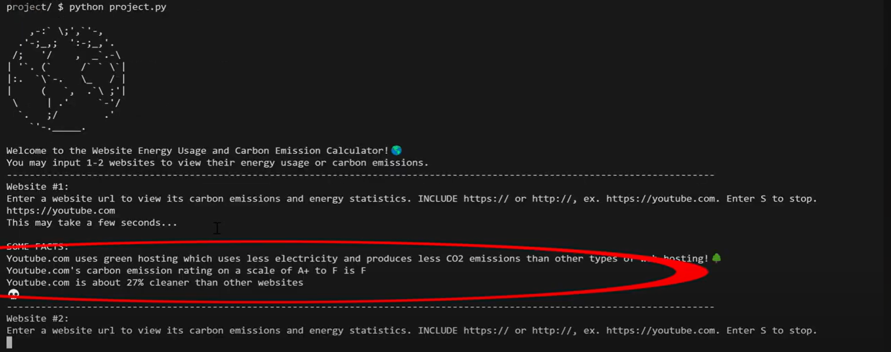
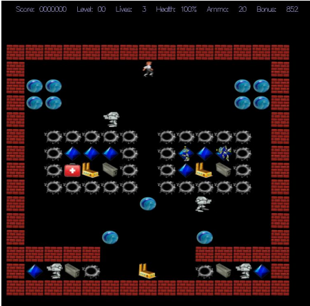
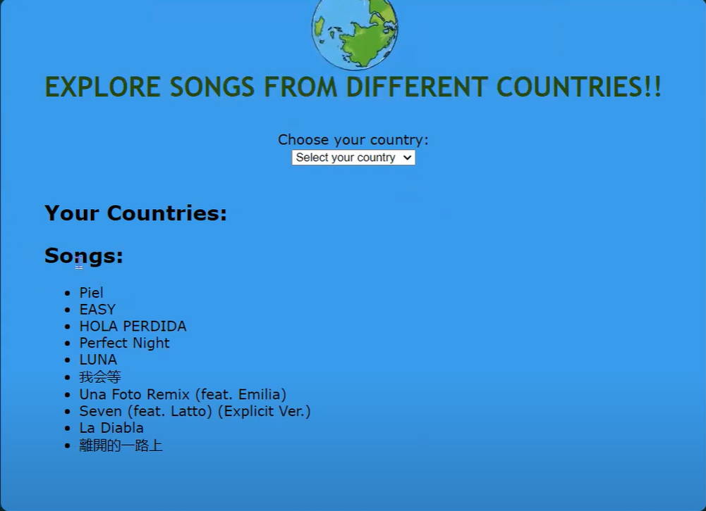

Here are some of the projects I have worked on. For more up to date information on what I am working on, be sure to checkout my GitHub.
Python, Regex Expressions, Data API
 I developed a Website Energy Usage and Carbon Emission Calculator to highlight the environmental impact of websites. The program allows users to input up to two website URLs, which I validate using the validator_collection library to prevent API overload. I extract the website names with regex, then make an HTTP GET request to the Website Carbon API to retrieve energy usage and carbon emissions data. This information is stored in global arrays, and if the API response is successful, the program generates bar graphs for the data using the plotext library. My goal is to provide a visual representation of the statistics, spreading awareness about the energy and carbon costs associated with web browsing.
Python, Pygame, Git
I worked in a team to develop a game that informs players about certain pathogens and how the body's immune system combats them. I utilized Pygame to implement player actions and scoring system for the game. I also designed the game’s GUI along with informational components throughout the game that informs players on accurate medical information regarding pathogens.
C++, OOP
 I programmed a web game where the objective for a player was to collect blue crystals scattered throughout each maze while avoiding hazards like marbles, pits, and enemy robots. There is immense usage of C++ Object Oriented Programming with 2000+ lines of code written. In Marble Madness, the player starts out a new game with three lives and continues to play until all of his/her lives have been exhausted. There are multiple levels in Marble Madness, beginning with level 0, and each level has its own maze. During each level, the player must gather all of the blue crystals within the current maze before the exit is revealed and they may use it to move on to the next level.
Python, Javascript, HTML, CSS, Flask
 I worked in a team to program an application where users can choose one or multiple countries and a playlist consisting of the top charting songs from those countries will be generated in their Spotify account. his was built using a combination of HTML, CSS, JavaScript, Python, Spotify Web API, and Flask which helped enable seamless interaction between the front-end interface and the back-end functionality.